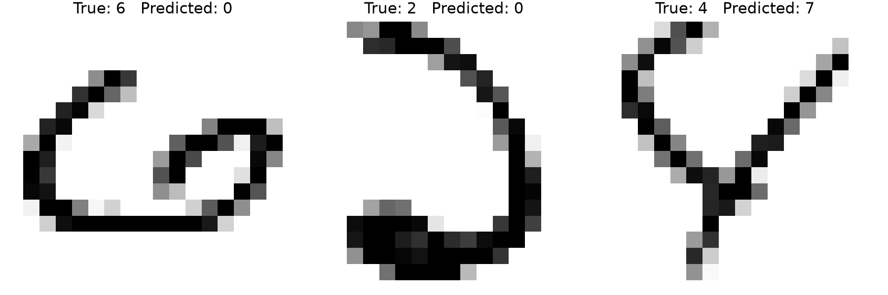

The solutions below use Python with
numpy, pandas, matplotlib, and scikit-learn. Run the code from the folder containing data/knn, or change DATA_DIR in Question 4.
Shared setup
Python imports
Python setupRequired packages
"""
STAT 432 Homework 05 — Python answers
Run this script from the folder containing data/knn, or change DATA_DIR below.
Required packages: numpy, pandas, matplotlib, scikit-learn.
"""
import numpy as np
import pandas as pd
import matplotlib.pyplot as plt
from sklearn.neighbors import KNeighborsRegressor
from sklearn.linear_model import Lasso
Question 1
Bias and variance of KNN
Python implementationComplete section
# ---------------------------------------------------------------------
# Question 1: Bias and variance of KNN
# ---------------------------------------------------------------------
np.random.seed(43251)
n = 400
p = 3
k_values = np.arange(1, 30, 2)
x0 = np.array([[0.5, 0.7, 1.0]])
f0 = 0.5 * x0[0, 0] + np.sin(x0[0, 1]) - 0.3 * x0[0, 2] ** 2
print("\nQUESTION 1")
print("f(x0) =", f0)
# One training data set
X = np.random.normal(size=(n, p))
y = (
0.5 * X[:, 0]
+ np.sin(X[:, 1])
- 0.3 * X[:, 2] ** 2
+ np.random.normal(scale=0.1, size=n)
)
one_pred = []
for k in k_values:
fit = KNeighborsRegressor(
n_neighbors=int(k), weights="uniform", algorithm="brute"
)
fit.fit(X, y)
one_pred.append(fit.predict(x0)[0])
one_result = pd.DataFrame(
{"k": k_values, "prediction": one_pred, "truth": f0}
)
print("\nOne simulated training data set:")
print(one_result.to_string(index=False))
# 200 independent repetitions
nsim = 200
pred_matrix = np.empty((nsim, len(k_values)))
for sim in range(nsim):
X = np.random.normal(size=(n, p))
y = (
0.5 * X[:, 0]
+ np.sin(X[:, 1])
- 0.3 * X[:, 2] ** 2
+ np.random.normal(scale=0.1, size=n)
)
for j, k in enumerate(k_values):
fit = KNeighborsRegressor(
n_neighbors=int(k), weights="uniform", algorithm="brute"
)
fit.fit(X, y)
pred_matrix[sim, j] = fit.predict(x0)[0]
bias = pred_matrix.mean(axis=0) - f0
variance = pred_matrix.var(axis=0, ddof=0) # divisor = 200
squared_bias = bias ** 2
mse = ((pred_matrix - f0) ** 2).mean(axis=0)
q1_results = pd.DataFrame(
{
"k": k_values,
"bias": bias,
"squared_bias": squared_bias,
"variance": variance,
"MSE": mse,
"squared_bias_plus_variance": squared_bias + variance,
}
)
print("\nBias/variance/MSE results:")
print(q1_results.round(6).to_string(index=False))
print(
"\nMaximum absolute difference in "
"MSE - squared bias - variance:",
np.max(np.abs(mse - squared_bias - variance)),
)
# Original Q1 plot
plt.figure(figsize=(7, 4.5))
plt.plot(k_values, squared_bias, "o-", label="Squared bias")
plt.plot(k_values, variance, "o-", label="Variance")
plt.plot(k_values, mse, "o-", label="MSE")
plt.xlabel("Number of neighbors k")
plt.ylabel("Squared error")
plt.ylim(bottom=0)
plt.legend()
plt.tight_layout()
plt.savefig("q1_original.png", dpi=200)
plt.show()
# Q5 formatted/revised version of the same plot.
plt.figure(figsize=(6.5, 4.5))
plt.plot(k_values, squared_bias, "o-", linewidth=1.8,
markersize=5, label="Squared bias")
plt.plot(k_values, variance, "o-", linewidth=1.8,
markersize=5, label="Variance")
plt.plot(k_values, mse, "o-", linewidth=1.8,
markersize=5, label="MSE")
plt.title("KNN Bias–Variance Trade-off", fontsize=14, pad=12)
plt.xlabel("Number of neighbors, k", fontsize=12)
plt.ylabel("Error", fontsize=12)
plt.xticks(k_values, fontsize=10)
plt.yticks(fontsize=10)
plt.legend(frameon=False, fontsize=10)
plt.margins(x=0.03)
plt.tight_layout()
plt.savefig("q1_revised.png", dpi=200)
plt.show()
Interpretation. With small
k, KNN averages only a few observations. The estimate is flexible, so squared bias is generally lower, but estimates vary more across training sets. As k increases, averaging more observations reduces variance while smoothing generally raises squared bias. The MSE balances these contributions; here it equals squared bias plus variance because the target is the mean response at x0 and empirical variance uses divisor 200. This parallels ridge regression: larger λ shrinks coefficients, generally increasing bias and reducing variance, while smaller λ allows a more flexible fit. KNN controls flexibility through k; ridge controls it through λ.Question 2
KNN versus lasso
Python implementationComplete section
np.random.seed(43252)
n = 400
p = 30
lambda_grid = np.logspace(0, -4, 41)
q2_rows = []
for setting in ["Independent", "Correlated"]:
if setting == "Independent":
Sigma = np.eye(p)
else:
Sigma = 0.8 + 0.2 * np.eye(p)
X_all = (
np.random.normal(size=(n + 1000, p))
@ np.linalg.cholesky(Sigma).T
)
y_all = (
0.5 * X_all[:, 0]
+ np.sin(X_all[:, 1])
- 0.3 * X_all[:, 2] ** 2
+ np.random.normal(scale=0.1, size=n + 1000)
)
X_train = X_all[:n]
y_train = y_all[:n]
X_test = X_all[n:]
y_test = y_all[n:]
# 5NN
knn = KNeighborsRegressor(
n_neighbors=5, weights="uniform", algorithm="brute"
)
knn.fit(X_train, y_train)
knn_pred = knn.predict(X_test)
knn_mse = np.mean((y_test - knn_pred) ** 2)
# Ten-fold CV for lasso.
# Standardization is recomputed inside each training fold.
fold = np.random.permutation(np.repeat(np.arange(10), n // 10))
cv_mse = np.zeros((10, len(lambda_grid)))
for fold_id in range(10):
train_fold = fold != fold_id
valid_fold = ~train_fold
X_mean = X_train[train_fold].mean(axis=0)
X_sd = X_train[train_fold].std(axis=0, ddof=0)
X_fit = (X_train[train_fold] - X_mean) / X_sd
X_valid = (X_train[valid_fold] - X_mean) / X_sd
y_mean = y_train[train_fold].mean()
for j, lam in enumerate(lambda_grid):
lasso = Lasso(
alpha=lam,
fit_intercept=False,
tol=1e-8,
max_iter=100000,
)
lasso.fit(X_fit, y_train[train_fold] - y_mean)
valid_pred = lasso.predict(X_valid) + y_mean
cv_mse[fold_id, j] = np.mean(
(y_train[valid_fold] - valid_pred) ** 2
)
lambda_min = lambda_grid[np.argmin(cv_mse.mean(axis=0))]
# Refit on all training observations.
X_mean = X_train.mean(axis=0)
X_sd = X_train.std(axis=0, ddof=0)
X_fit = (X_train - X_mean) / X_sd
X_test_fit = (X_test - X_mean) / X_sd
y_mean = y_train.mean()
lasso = Lasso(
alpha=lambda_min,
fit_intercept=False,
tol=1e-8,
max_iter=100000,
)
lasso.fit(X_fit, y_train - y_mean)
lasso_pred = lasso.predict(X_test_fit) + y_mean
lasso_mse = np.mean((y_test - lasso_pred) ** 2)
nonzero = np.count_nonzero(lasso.coef_)
q2_rows.append(
{
"Setting": setting,
"KNN MSE": knn_mse,
"Lasso MSE": lasso_mse,
"Selected lambda": lambda_min,
"Nonzero lasso slopes": nonzero,
}
)
q2_results = pd.DataFrame(q2_rows)
print("\nQUESTION 2")
print(q2_results.round(6).to_string(index=False))
Comparison. With independent covariates, lasso has lower test MSE than 5NN (about 0.234 versus 0.564). With correlated covariates, 5NN has lower test MSE (about 0.173 versus 0.242 for lasso). With independent covariates, all 30 coordinates contribute to Euclidean distance, including the 27 that do not appear in the response. Thus, points that are close in the full 30-dimensional space need not be close in the three response-relevant coordinates. In this correlated setting, the covariates share substantial variation, and their common structure makes Euclidean neighborhoods more informative about response-relevant variation. KNN uses every covariate in its distance calculation, so even irrelevant coordinates can change which observations are neighbors. Lasso instead estimates and penalizes a coefficient for each standardized covariate, shrinking some to zero; here it retains 9 slopes with independent covariates and 2 with correlated covariates. With highly correlated predictors, multiple variables can act as proxies for one another, so lasso may select one and shrink others rather than using all covariates equally.
Model form and scope. The response includes
sin(X2) and -0.3 X32, but lasso is fit using only linear terms. It is therefore misspecified: even if it selects X2 and X3, it cannot represent the changing effects of the sine and quadratic terms. Its intercept can absorb an average contribution, but not the variation in those nonlinear effects across observations. KNN does not impose a linear response form, though its performance still depends on finding informative neighborhoods. The MSE comparison reflects both neighborhood quality and lasso's linear-model limitation, so it does not isolate the effect of correlation alone. Correlation makes KNN neighborhoods more useful in this particular simulation, but it could instead distort distances or emphasize variation unrelated to the response. These results from one simulated dataset per setting do not justify saying correlation always helps KNN or that either method is always better.Question 3
Observed dimension versus latent dimension
Python implementationComplete section
np.random.seed(43254)
p = 100
m_values = [3, 30]
k_values_q3 = np.arange(2, 83, 8)
# Part (a): one experiment for each m
one_test_mse = np.empty((len(k_values_q3), len(m_values)))
for s, m in enumerate(m_values):
A = np.random.uniform(-2, 2, size=(p, m))
Z = np.random.normal(size=(400, m))
X = Z @ A.T + np.random.normal(size=(400, p))
y = Z[:, 0] + Z[:, 1] + np.random.normal(size=400)
for j, k in enumerate(k_values_q3):
knn = KNeighborsRegressor(
n_neighbors=int(k), weights="uniform", algorithm="brute"
)
knn.fit(X[:200], y[:200])
pred = knn.predict(X[200:])
one_test_mse[j, s] = np.mean((y[200:] - pred) ** 2)
q3_one = pd.DataFrame(
{
"k": k_values_q3,
"m=3": one_test_mse[:, 0],
"m=30": one_test_mse[:, 1],
}
)
print("\nQUESTION 3 — one experiment:")
print(q3_one.round(4).to_string(index=False))
# Part (b): 50 repetitions
nsim = 50
test_mse = np.empty((nsim, len(k_values_q3), len(m_values)))
for sim in range(nsim):
for s, m in enumerate(m_values):
A = np.random.uniform(-2, 2, size=(p, m))
Z = np.random.normal(size=(400, m))
X = Z @ A.T + np.random.normal(size=(400, p))
y = Z[:, 0] + Z[:, 1] + np.random.normal(size=400)
for j, k in enumerate(k_values_q3):
knn = KNeighborsRegressor(
n_neighbors=int(k),
weights="uniform",
algorithm="brute",
)
knn.fit(X[:200], y[:200])
pred = knn.predict(X[200:])
test_mse[sim, j, s] = np.mean((y[200:] - pred) ** 2)
mean_mse = test_mse.mean(axis=0)
q3_results = pd.DataFrame(
{
"k": k_values_q3,
"m=3": mean_mse[:, 0],
"m=30": mean_mse[:, 1],
}
)
print("\nQUESTION 3 — average over 50 repetitions:")
print(q3_results.round(4).to_string(index=False))
plt.figure(figsize=(6.5, 4.5))
plt.plot(k_values_q3, mean_mse[:, 0], "o-", label="m = 3")
plt.plot(k_values_q3, mean_mse[:, 1], "^-", label="m = 30")
plt.title("Average Test MSE for KNN", fontsize=14, pad=12)
plt.xlabel("Number of neighbors, k", fontsize=12)
plt.ylabel("Average test MSE", fontsize=12)
plt.legend(frameon=False)
plt.margins(x=0.03)
plt.tight_layout()
plt.savefig("q3_average_mse.png", dpi=200)
plt.show()
Interpretation. Although both settings have 100 observed covariates, their effective dimensions differ. The response depends on
Z1 and Z2 in both cases, but when m = 30 the other 28 latent directions affect X and contribute to Euclidean distances without helping predict Y. In the 50-repetition averages, m = 3 has lower test MSE at every tested k; the lowest tested values are about 1.304 at k = 10 for m = 3 and 2.289 at k = 18 for m = 30. The term ηi adds independent noise to all 100 observed coordinates, perturbing distances without carrying information about Y. Since X = AZ + η, this noise generally has components outside the column space of A; observations lie around, not exactly within, the m-dimensional latent subspace. This added variation increases the effective dimension and weakens neighborhood quality.Question 4
Handwritten digits
Python implementationComplete section
# The homework ZIP contains the course copies at:
# data/knn/zip-train.csv.gz
# data/knn/zip-test.csv.gz
#
# Run this script from the "week-05" folder, or change DATA_DIR.
DATA_DIR = "data/knn"
zip_train = np.loadtxt(
f"{DATA_DIR}/zip-train.csv.gz", delimiter=","
)
zip_test = np.loadtxt(
f"{DATA_DIR}/zip-test.csv.gz", delimiter=","
)
X_train = zip_train[:1000, 1:]
y_train = zip_train[:1000, 0].astype(int)
X_test = zip_test[:500, 1:]
y_test = zip_test[:500, 0].astype(int)
def euclidean_distance(x0, X):
"""Euclidean distance from one image x0 to every row of X."""
return np.sqrt(np.sum((X - x0) ** 2, axis=1))
def manhattan_distance(x0, X):
"""Manhattan distance from one image x0 to every row of X."""
return np.sum(np.abs(X - x0), axis=1)
def knn_classify(X, y, X_test, distance):
"""
Five-nearest-neighbor classifier.
Distance ties are broken by smaller training row number.
Voting ties are broken by the smallest digit.
"""
predictions = np.empty(X_test.shape[0], dtype=int)
training_rows = np.arange(X.shape[0])
for i, x0 in enumerate(X_test):
distances = distance(x0, X)
# lexsort first sorts by distance, then by row number.
nearest = np.lexsort((training_rows, distances))[:5]
counts = np.bincount(y[nearest], minlength=10)
predictions[i] = np.flatnonzero(
counts == counts.max()
)[0]
return predictions
euclidean_pred = knn_classify(
X_train, y_train, X_test, euclidean_distance
)
manhattan_pred = knn_classify(
X_train, y_train, X_test, manhattan_distance
)
print("\nQUESTION 4")
for name, pred in [
("Euclidean", euclidean_pred),
("Manhattan", manhattan_pred),
]:
error = np.mean(pred != y_test)
confusion = pd.crosstab(
pd.Series(pred, name="Predicted"),
pd.Series(y_test, name="True"),
).reindex(index=range(10), columns=range(10), fill_value=0)
print(f"\n{name} test error: {error:.3f}")
print(confusion)
print(
"\nNumber of test images receiving different predictions:",
np.sum(euclidean_pred != manhattan_pred),
)
print(
"Euclidean correct / Manhattan wrong:",
np.sum((euclidean_pred == y_test) & (manhattan_pred != y_test)),
)
print(
"Manhattan correct / Euclidean wrong:",
np.sum((euclidean_pred != y_test) & (manhattan_pred == y_test)),
)
print(
"Both wrong but different predictions:",
np.sum(
(euclidean_pred != y_test)
& (manhattan_pred != y_test)
& (euclidean_pred != manhattan_pred)
),
)
# Three incorrectly classified Euclidean test images
incorrect = np.flatnonzero(euclidean_pred != y_test)[:3]
plt.figure(figsize=(9, 3))
for j, i in enumerate(incorrect):
plt.subplot(1, 3, j + 1)
plt.imshow(
zip_test[i, 1:].reshape(16, 16),
cmap="gray_r",
vmin=0,
vmax=1,
interpolation="nearest",
)
plt.title(
f"True: {y_test[i]} Predicted: {euclidean_pred[i]}",
fontsize=11,
)
plt.axis("off")
plt.tight_layout()
plt.savefig("q4_three_euclidean_errors.png", dpi=200)
plt.show()

Interpretation. The first three Euclidean errors are test images with true labels 6, 2, and 4, predicted as 0, 0, and 7. The errors are visually understandable: the 6 has a rounded lower loop, the 2 has an unusual curve, and the 4 lacks a typical crossbar. Pixel-based distances compare intensity across fixed locations, so they can miss the structural cues a person uses to recognize handwriting.
Comparison. Euclidean 5NN makes 61 errors out of 500 (12.2%); Manhattan 5NN makes 69 (13.8%), so Euclidean performs slightly better on this test set. The totals are fairly close, but the methods give different predictions on 22 images: Euclidean is correct while Manhattan is wrong on 11, Manhattan is correct while Euclidean is wrong on 3, and both are wrong but predict different digits on 8. Thus, similar overall error can conceal mistakes on different images. These results describe this particular split and do not establish that one distance is always better.
Question 5
Plot-formatting skill
Final SKILL.md content
---
name: new-format-homework-plots
description: Use only when the user explicitly requests it to improve the
formatting of a STAT 432 homework plot. This skill is limited to STAT 432
homework plot improvements and must not change any underlying data,
calculations, or statistical conclusions.
---
# STAT 432 Homework Plot Formatting
- Preserve the plotted data, calculations, and statistical meaning.
- Leave enough margin around the figure so titles, labels, legends, and
tick marks are not clipped.
- Use a short, informative title that clearly describes the plot.
- Label axes clearly and include units when relevant.
- Use readable tick spacing and consistent axis labeling.
- Prefer a colorblind-friendly palette and use line styles or markers to
distinguish curves when helpful.
- Start with a 6.5 by 4.5 inch figure, 12-point labels, and a 14-point
title; adjust slightly for multiple panels or crowded axes.
- Apply these rules to existing R or Python plotting code without
referring to a specific homework question.Reflection: I chose a narrow, explicit, and portable skill that requires a clear request before use and focuses only on plot formatting. Its rules cover the essentials of a readable STAT 432 plot while preserving the underlying data and conclusions.